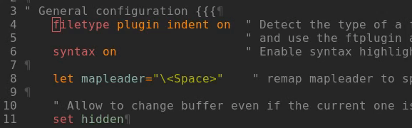

A few days ago I saw a blog post showing a built-in way to highlight yanked text on neovim. The author uses neovim's lua integration combined with the :h TextYankPost autocommand event:
augroup highlightYankedText
autocmd!
autocmd TextYankPost * silent! lua require'vim.highlight'.on_yank()
augroup ENDI liked the idea of having visual feedback on my yanks but I am still reluctant to use the lua integration. Despite all the bad things you can read about vimscript online I like to keep my configuration in pure vimscript as much as possible mostly for portability reasons.
So I decided to reinvent the wheel replicate this behavior with pure vimscript! This was interesting to do because it involves playing with patterns and matches which are the basic building bricks of Vim's highlighting function. And because these are not tools that I need to use regularly so I am not very familiar with them.
So here is the result I am looking for: In this screen cap you can see me first yanking the word "filetype" with yiw, then the full line with yy and finally several lines:

In this article I want to detail the steps I followed to get this feature working and I hope this kind of iteration process can help new vimmers to get into vimscript.
First a bit of Vim terminology about highlighting:
A pattern is basically a regular expression which can be used to search for some text.
Patterns can be as simple as plain text (e.g. /TODO ) or complex regexes with a lot of items as described in :h pattern.
A highlighting group is a named group of highlighting instructions.
The :highlight command allows to list the existing groups when given no arguments. It also allows to create new groups or get details about the existing ones. By default both Vim and Neovim have an IncSearch highlighting group which we will reuse to highlight our text. You can see what it looks like on your system with the command :highlight IncSearch
Finally a match is a way to tell Vim to highlight a specific pattern using a specific highlighting group.
A match can be created with matchadd(). The first argument is the name of an highlighting group as shown in the result of :highlight and the second argument is a pattern:
let id = matchadd('IncSearch', 'TODO')To delete a match simply use the ID returned by the previous command. Note that this command only works in the window where the match was created, this will be important later on.
call matchdelete(id)The first step to highlight yanked text is to be able to match the last yanked text. Fortunately, :h '[ tells us that Vim has two marks '[ and '] which are positioned on the first and last characters of the previously changed or yanked text.
And :h /\%'m tells us that we can use such marks in a pattern, so my first attempt looked like this:
let g:idTemporaryHighlight = matchadd('IncSearch', "\\%'\\[.*\\%']")The main items of the pattern are the following:
'[ is the mark I mentioned before but [ being a special character (used in :h /[]) it needs to be escaped hence '\\[. Note that each \ needs to be escaped to be used in the command.\\%'\\[ is the way to use :h /\%'m with the '[ mark, matching the beginning of the previously yanked text..* allows to match any characters any number of time.\\%'] is the equivalent of the first item with the '] mark. Note that here ] doesn't need to be escaped since there is no risk of confusion with :h /[].This is a great first attempt which kind of works on some simple cases but fails when yanking text on several lines. This is because the . atom doesn't match end of lines characters, so we need to use \_. instead:
let g:idTemporaryHighlight = matchadd('IncSearch', "\\%'\\[\\_.*\\%']")That is better but still not completely working, for example the first and last characters of the yanked text are not highlighted. That's the moment where we turn to the doc and read a bit more what :h /\%'m has to say, particularly this:
Example, to highlight the text from mark 's to 'e:
/.\%>'s.*\%<'e..
Note that two dots are required to include mark 'e in the match. That
is because "\%<'e" matches at the character before the 'e mark, and
since it's a |/zero-width| match it doesn't include that character.
Easy peasy, let's reuse the same thing but with our marks '[ and ']:
let g:idTemporaryHighlight = matchadd('IncSearch', ".\\%>'\\[\\_.*\\%<']..")Important note: Some of this escaping could be greatly simplified using a different magic mode but it's not my point here. For more information on magic in Vim see :h /magic
So after a few tests yanking some random text, using matchadd to highlight it and matchdelete to remove the highlighting I am satisfied with the result, it is then time to automatically highlight our text.
Vim provides since it patch 8.0.1394 the :h TextYankPost autocommand event which triggers just after a yank or deleting command. So our first step is to create a function triggered by this event:
augroup highlightYankedText
autocmd!
autocmd TextYankPost * call FlashYankedText()
augroup END
function! FlashYankedText()
let g:idTemporaryHighlight = matchadd('IncSearch', ".\\%>'\\[\\_.*\\%<']..")
endfunctionAs you can see I put my autocommand in an augroup because every time you use an autocommand without an augroup you make a kitten cry 😿... and for other reasons too.
That is great! Each time we yank some text it gets highlighted... but then it remains highlighted indefinitely. So let's simply use a timer to delete the match we just created. Note that the function puts the id of the newly created match in a global variable which is kind of ugly but pretty pratical to access it in the DeleteTemporaryMatch() function.
function! FlashYankedText()
let g:idTemporaryHighlight = matchadd('IncSearch', ".\\%>'\\[\\_.*\\%<']..")
call timer_start(500, 'DeleteTemporaryMatch')
endfunction
function! DeleteTemporaryMatch(timerId)
call matchdelete(g:idTemporaryHighlight)
endfunctionThe previous code kind of works but some edge cases are problematic:
DeleteTemporaryMatch() function doesn't have the time to delete the previous match.deletematches() fails because the matches id are local to a window.So let's put the ids in a list, with the window id where they were created:
function! FlashYankedText()
if (!exists('g:yankedTextMatches'))
let g:yankedTextMatches = []
endif
let matchId = matchadd('IncSearch', ".\\%>'\\[\\_.*\\%<']..")
let windowId = winnr()
call add(g:yankedTextMatches, [windowId, matchId])
call timer_start(500, 'DeleteTemporaryMatch')
endfunctionNow DeleteTemporaryMatch() can simply dequeue the g:yankedTextMatches list and remove the matches on the corresponding window:
function! DeleteTemporaryMatch(timerId)
while !empty(g:yankedTextMatches)
let match = remove(g:yankedTextMatches, 0)
let windowID = match[0]
let matchID = match[1]
try
call matchdelete(matchID, windowID)
endtry
endwhile
endfunctionFor good measures the call to matchdelete() is enclosed in a try...catch block, just in case something else fails and I don't want to be bothered with an error message.
And here we are! With about 20 lines of vimscript we reimplemented the highlight yanked text feature!
Now that we have a code working properly, we could leave that in our .vimrc and live happily with that... But it would be even better to make it a plugin! This way the functions will be loaded only when necessary (and thus, avoid increasing your startup time), we can get rid of global variables and just have a clean line in our .vimrc, and while we are at it we could create a variable to control how long the flash should last... And that's actually what I did!
I think the specific of how I turned my code into a plugin would make this post way too long, so the resulting plugin can be found on my github and I am of course available to answer any questions you could have about it.